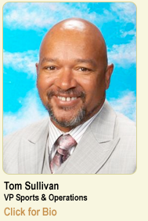

For more than 48 years, Martin L. Mathews has dedicated his life to community service. A champion for youth, Mathews has forged relationships with business and community leaders, and developed innovative programs for thousands of young people.
Mathews-Dickey has come a long way since their humble beginnings. The new facility at Kingshighway and Penrose is equipped with an Olympic-size pool, basketball gymnasiums, community meeting and music rooms, computer and tutorial labs and administrative offices. In 1982 President Ronald Reagan dedicated the facility and declared it a model for the country.
Marketing & Financial Development
Effective marketing and financial planning will enable us to stay on the cutting edge of youth services. Leading that effort is Audrey Wilson, Vice President, Marketing & Financial Development.
To maintain the winning edge in the next century, the Marketing and Financial Development Department assesses the Club's programs and services. This includes internal auditing procedures that define our programs' primary goals and measure their results. Our Club-wide course catalog highlights the many activities available to our members. Special attention is paid to membership recruitment in the Girls' Program, which includes many cultural and leadership activities that complement our ever-popular Cheerleading. It is always exciting to see our 19,000-square-foot Girls' Program Expansion Wing buzzing with 10,000 young women engaging in positive activities.
Public Relations & Special Events
 There is plenty of good news at Mathews-Dickey. Led by Barbara A. Washington, the Public Relations & Special Events Department's comprehensive plan has generated increased awareness, financial and in-kind resources. The Club has been featured on every major television network and in numerous local and national print and electronic media outlets. We have conducted a record number of informational meetings, speaking engagements and facility tours to educate the community about the Club's activities. Affiliations with several local and national organizations have increased our networking and improved our professional development.
There is plenty of good news at Mathews-Dickey. Led by Barbara A. Washington, the Public Relations & Special Events Department's comprehensive plan has generated increased awareness, financial and in-kind resources. The Club has been featured on every major television network and in numerous local and national print and electronic media outlets. We have conducted a record number of informational meetings, speaking engagements and facility tours to educate the community about the Club's activities. Affiliations with several local and national organizations have increased our networking and improved our professional development.
The department works with a team of dedicated volunteers to produce an event-a-month to raise much needed funds for our ongoing programs. These community-wide events are the perfect platform to recognize the efforts of our young people - many of whom have earned jobs and scholarships. Spreading the good news is essential to our continued growth and success. What better spokespersons could we have than our young people?
Sports & Operations Department
The Sports & Operations Department, led by Tom Sullivan, administers the Club's human resource policies, keeps our grounds and facilities in tip-top shape and athletic activities flourishing on the fields and courts.
Maintaining a 13-acre facility would not be possible without the in-kind donations of many dedicated supporters. We are especially proud of our young people's efforts with special gardening and clean-up projects. Due to the escalating costs of repairs, we are constantly seeking in kind and financial donors to keep our facility in tip-top shape.
Beautification is, indeed, a work in progress. We thank everyone who has helped create a safe, beautiful environment for our children to enjoy quality programs.